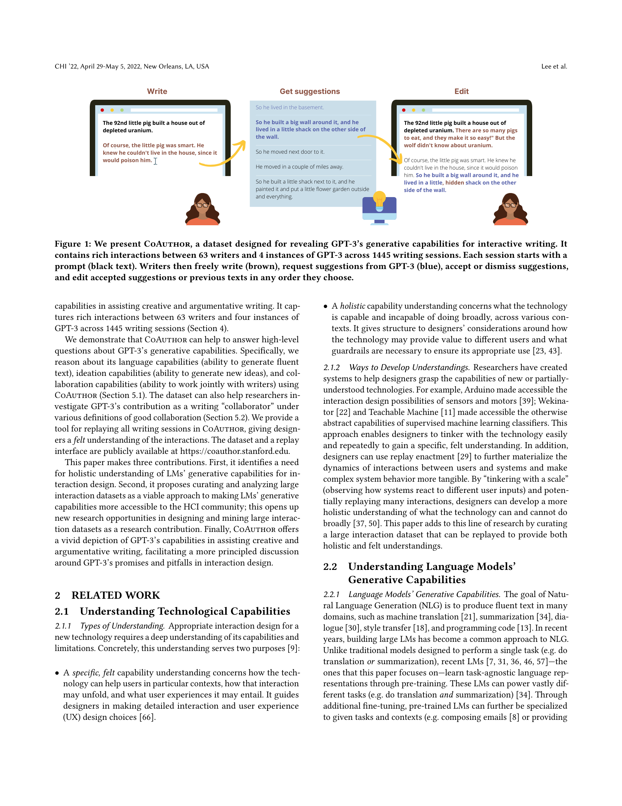
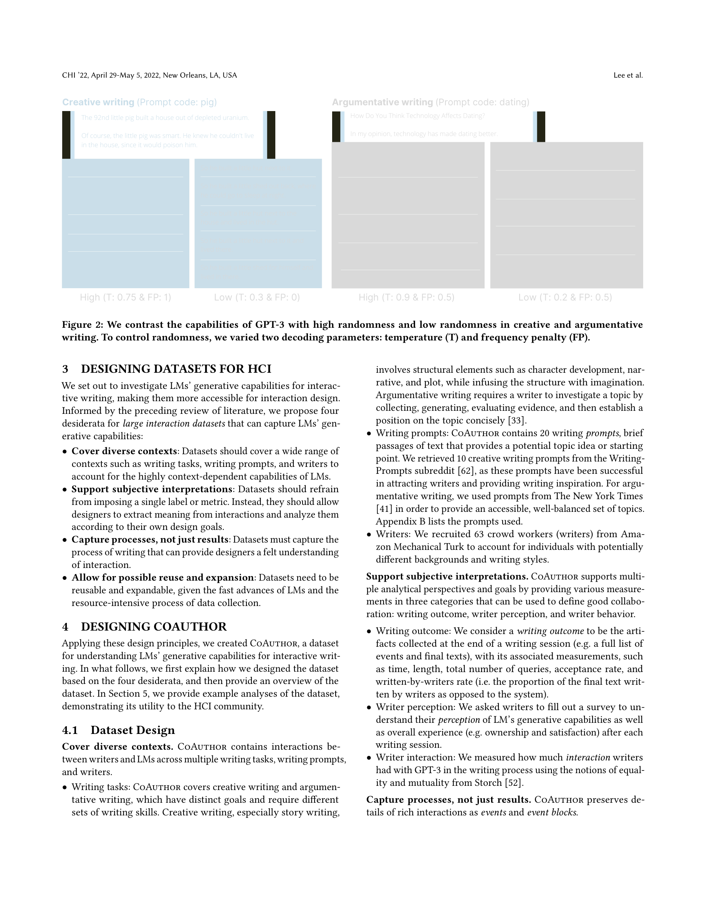
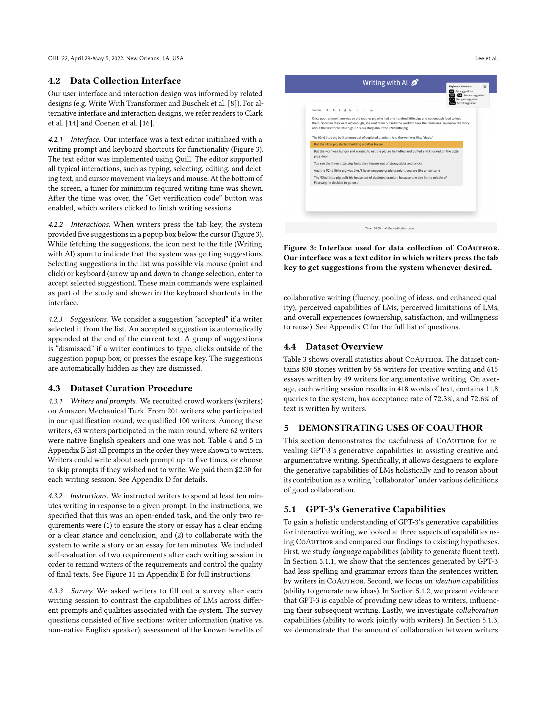
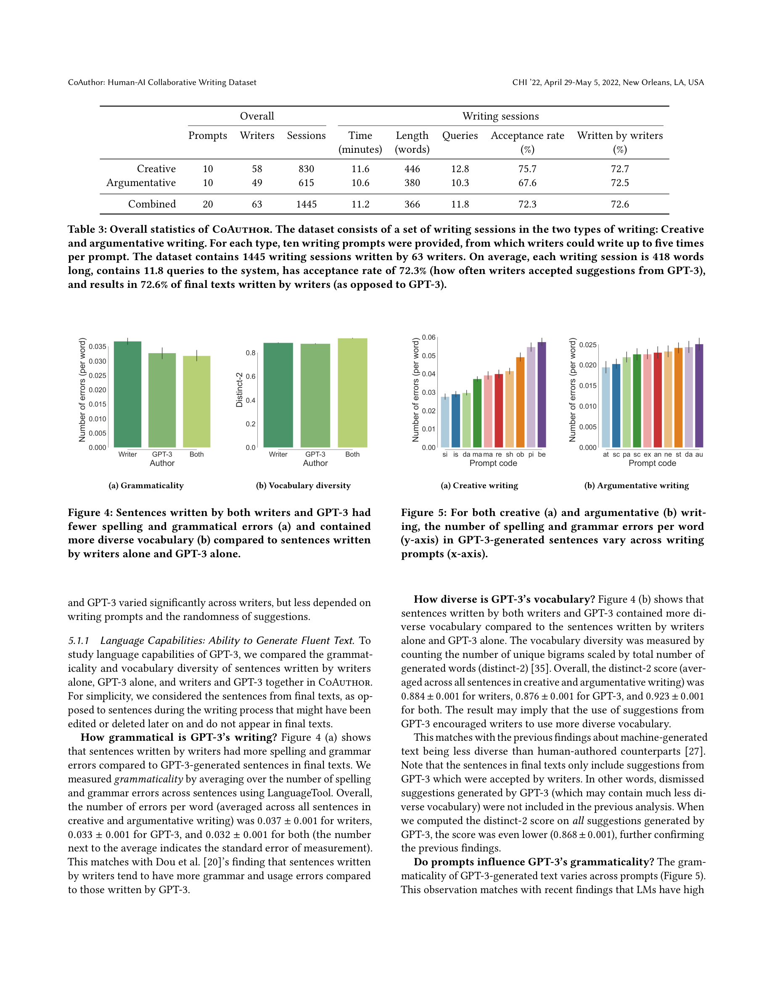

Figure 1

Figure 2
대규모 언어모델(LM)의 생성 능력을 인터랙션 디자인 관점에서 체계적으로 이해하기 위해, 인간-AI 협업 글쓰기 데이터셋 CoAuthor를 제안한다. 63명의 작가와 GPT-3의 4가지 인스턴스 간 1,445개 글쓰기 세션의 풍부한 상호작용을 수집하여, GPT-3의 언어 능력, 아이디어 생성 능력, 협업 능력을 다양한 맥락에서 정량적으로 분석할 수 있는 재사용 가능한 리소스를 구축했다.

Figure 3

Figure 4
CoAuthor는 인간-AI 협업 글쓰기 연구의 방법론적 이정표로 평가할 수 있다. LM의 능력을 단순히 "잘 쓰는가/못 쓰는가"가 아니라 "어떻게 인간과 함께 작업하는가"의 관점에서 체계적으로 분석할 수 있는 프레임워크를 제시한 점이 핵심 기여이다. 특히 데이터셋 설계의 4가지 원칙(맥락 다양성, 주관적 해석 지원, 과정 포착, 재사용성)은 후속 인간-AI 상호작용 데이터셋 설계의 표준적 지침이 될 수 있다. 1,445개 세션의 풍부한 상호작용 데이터는 GPT-3의 실제 협업 양상에 대한 정량적 근거를 제공하며, 특히 작가 개인차가 프롬프트보다 협업 패턴에 더 큰 영향을 미친다는 발견은 개인화된 AI 글쓰기 도구 설계에 중요한 시사점을 준다. 다만, CHI 2022 발표 이후 LM 기술이 급격히 발전한 점을 고려하면, 동일한 방법론을 최신 모델에 적용한 후속 연구가 필요하다.